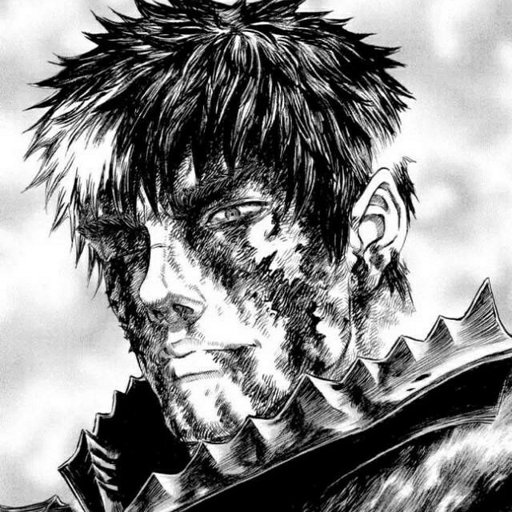

GUTS!

"Struggling against Destiny"
Guts, renowned as the "Black Swordsman", is a former mercenary and branded wanderer who travels the world in a constant internal struggle between pursuing his own ends and protecting those dear to him.
Learn More about the Struggler